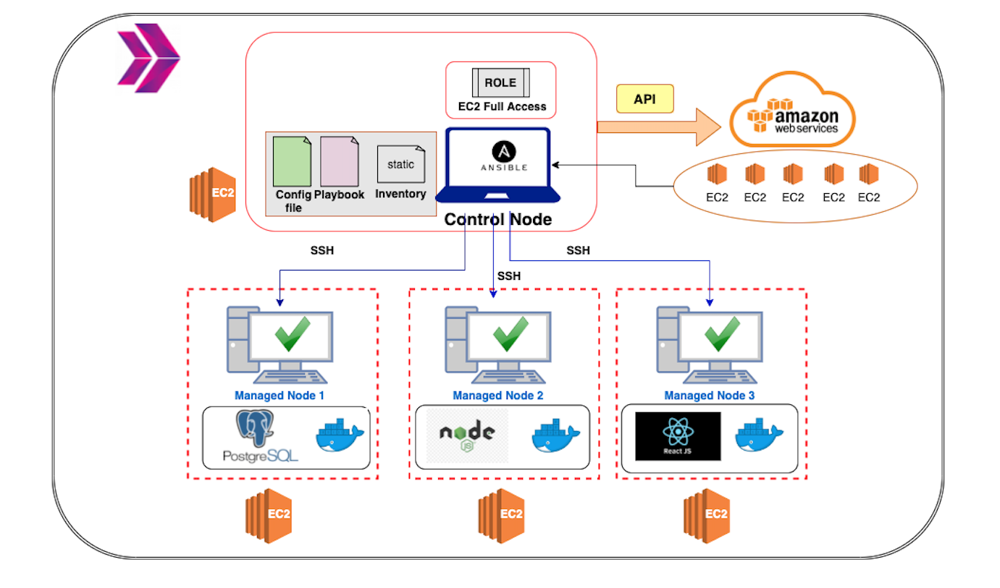

Web-Page Application aims to deploy web-page written Nodejs and React Frameworks
on AWS Cloud Infrastructure using Ansible. Building infrastructure process is managing with
control node utilizing Ansible. This infrastructure has 1 control node and 3 EC2's as worker
node.
These EC2's will be launched on AWS console. Web-page has 3 main components which are
postgresql,
nodejs, and react. Each component is serving in Docker container on EC2s dedicated for them.
Postgresql
is serving as Database of web-page. Nodejs controls backend part of web-side and react controls
frontend
side of web-page.

Phonebook Microservice Web Application aims to create a web application with MySQL Database using
Docker and Kubernetes.
In this application, we have a frontend service and a backend service to interact with database
service. Each service
will be managed by a Kubernetes deployment. The backend service will be a gateway for the
application and it will serve the necessary
web pages for create, delete and update
operations while the frontend service will serve a search page in order to conduct read
operations. To preserve the
data in the database, persistent volume and persistent volume claim concepts should be adopted.

This project aims to create a Jenkins pipeline to deploy the Phonebook Application web
application with Docker Swarm on
Elastic Compute Cloud (EC2) Instances by pulling the app images from the AWS Elastic Container
Registry (ECR) repository.

This project aims to deploy the Phonebook Application web application with Docker Swarm on
Elastic Compute Cloud (EC2) Instances
by pulling the app images from the AWS Elastic Container Registry (ECR) repository.

Bookstore Web API Application aims to create a bookstore web service using Docker Swarm
Deployment of Phonebook_Application.
The application code is to be deployed as a RESTful web service with Flask using Dockerfile and
Docker Compose on AWS Elastic
Compute Cloud (EC2) Instance using Terraform.

The Phonebook Application aims to create a phonebook application in Python and deployed as a web
application with
Flask on AWS Application Load Balancer with Auto Scaling Group of Elastic Compute Cloud (EC2)
Instances and Relational Database Service (RDS) using Terraform.

The Blog Page Application aims to deploy blog application as a web application written Django Framework on AWS Cloud Infrastructure.
This infrastructure has Application Load Balancer with Auto Scaling Group of Elastic Compute Cloud (EC2) Instances and Relational Database Service (RDS) on defined VPC.
Also, The Cloudfront and Route 53 services are located in front of the architecture and manage the traffic in secure.
User is able to upload pictures and videos on own blog page and these are kept on S3 Bucket. This architecture will be created by DevOps Engineer.